PUBLICATIONS
For the most up-to-date list, see my Google Scholar profile.
2026
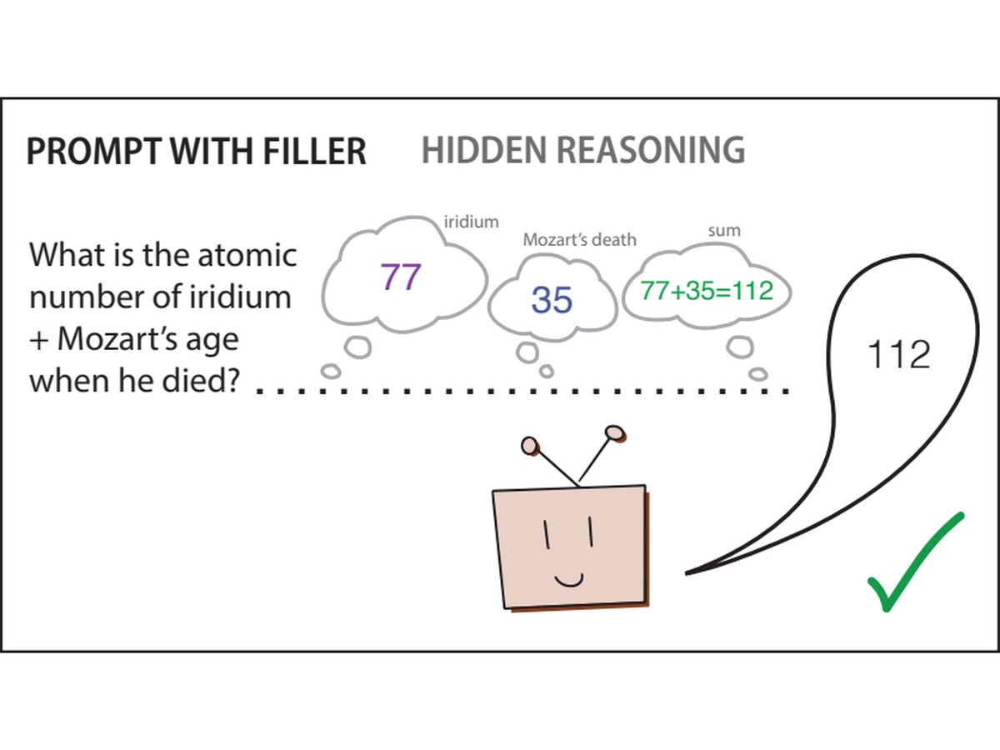 |
K. Brauer, C. Mayrink Verdun, S. Marks
ICML 2026 Mech Interp Workshop; arXiv preprint, 2026 · arXiv:2607.03502
|
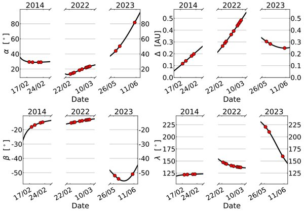 |
R. E. Cannon, A. Rożek, K. Brauer, M. W. Busch, C. Snodgrass, L. A. M. Benner, et al.
Monthly Notices of the Royal Astronomical Society, 2026 · arXiv:2503.01499
|
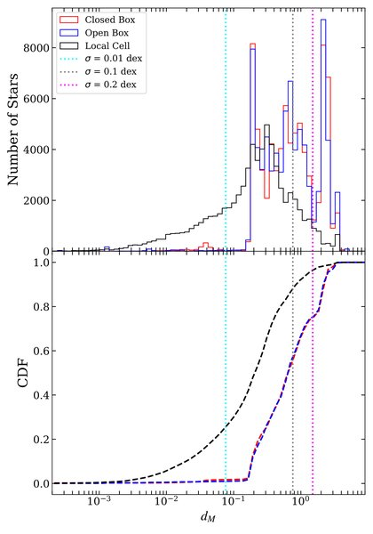 |
J. Mead, K. Brauer, G. L. Bryan, M.-M. Mac Low, A. P. Ji, J. H. Wise, E. P. Andersson, et al.
The Astrophysical Journal, 2026 · arXiv:2509.13580
|
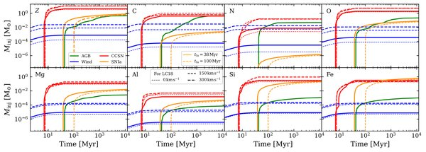 |
E. P. Andersson, M. P. Rey, R. M. Yates, J. I. Read, O. Agertz, A. P. Ji, J. Mead, K. Brauer, et al.
Astronomy & Astrophysics, 2026 · arXiv:2511.05695
|
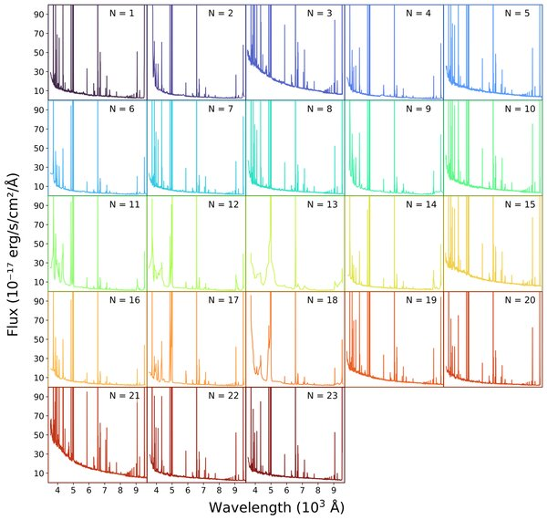 |
R. Emami, J. A. A. Trussler, T. Y. Y. Hsiao, K. Brauer, L. Hernquist, R. Smith, et al.
arXiv preprint, 2026 · arXiv:2604.20060
|
2025
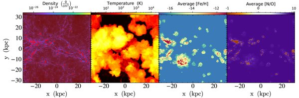 |
K. Brauer, A. Emerick, J. Mead, A. P. Ji, J. H. Wise, G. L. Bryan, M.-M. Mac Low, et al.
The Astrophysical Journal, 2025 · arXiv:2410.16366
|
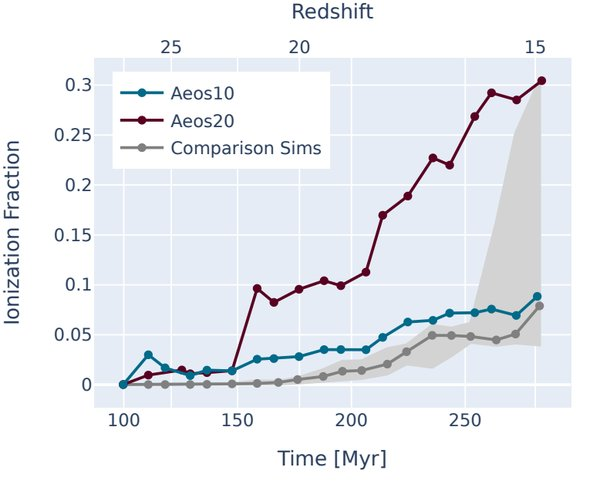 |
K. Brauer, J. Mead, J. H. Wise, G. L. Bryan, M.-M. Mac Low, A. P. Ji, A. Emerick, et al.
The Astrophysical Journal, 2025 · arXiv:2502.20433
|
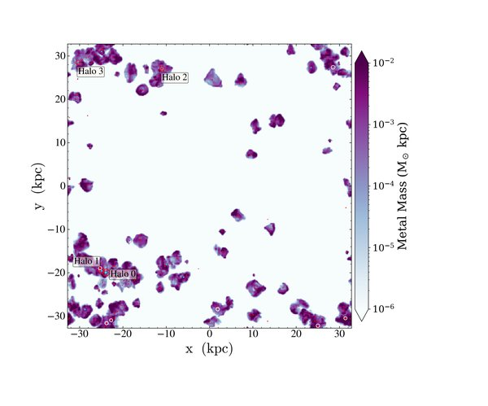 |
J. Mead, K. Brauer, G. L. Bryan, M.-M. Mac Low, A. P. Ji, J. H. Wise, A. Emerick, et al.
The Astrophysical Journal, 2025 · arXiv:2411.14209
|
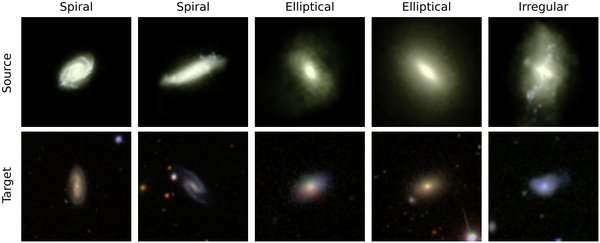 |
K. Brauer, A. P. Dash, M. J. Vyas, A. Salim, S. B. Massala
NeurIPS ML4PS; arXiv preprint, 2025 · arXiv:2511.18590
|
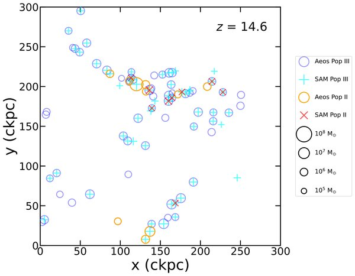 |
R. Hazlett, J. Mead, E. Visbal, G. L. Bryan, M.-M. Mac Low, M. Kulkarni, E. P. Andersson, K. Brauer, et al.
arXiv preprint, 2025 · arXiv:2510.11629
|
2024
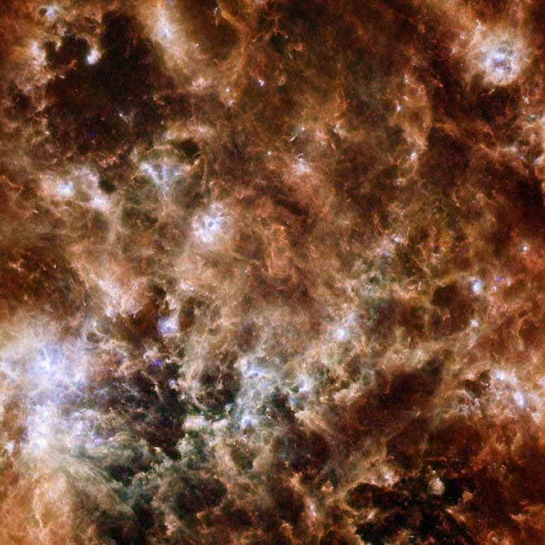 |
A. Chiti, M. Mardini, G. Limberg, A. Frebel, A. P. Ji, H. Reggiani, P. Ferguson, K. Brauer, et al.
Nature Astronomy, 2024 · arXiv:2401.11307
|
2023
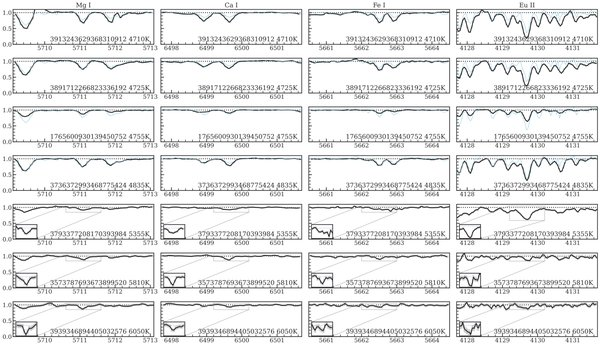 |
A. P. Ji, R. P. Naidu, K. Brauer, Y.-S. Ting, J. D. Simon
Monthly Notices of the Royal Astronomical Society, 2023 · arXiv:2207.04016
|
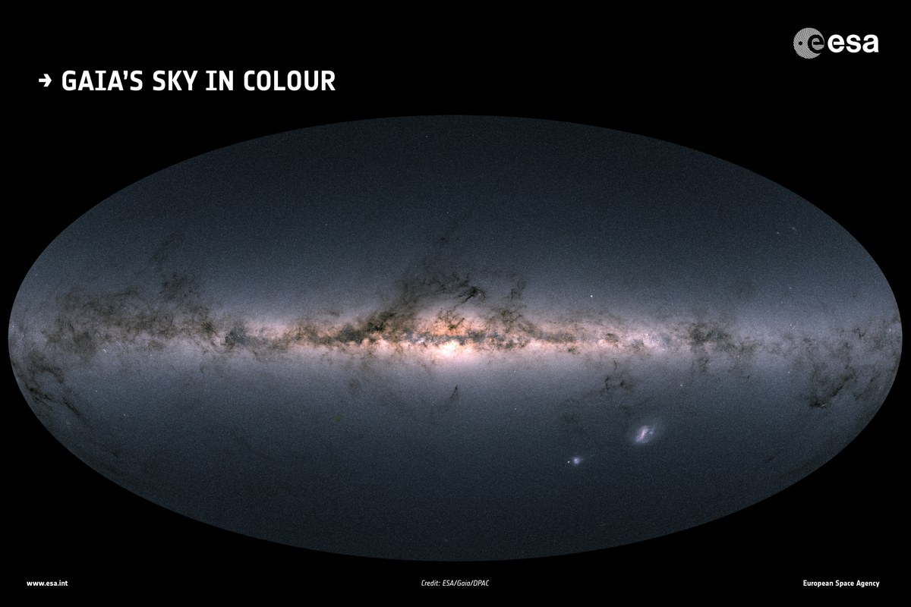 |
K. Brauer
Ph.D. Thesis, Massachusetts Institute of Technology, 2023 · DSpace
|
2022
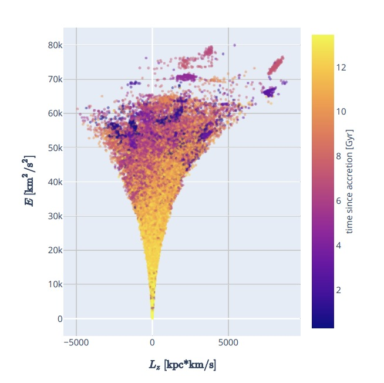 |
K. Brauer, H. D. Andales, A. P. Ji, A. Frebel, M. K. Mardini, F. A. Gómez, B. W. O'Shea
The Astrophysical Journal, 2022 · arXiv:2206.07057
|
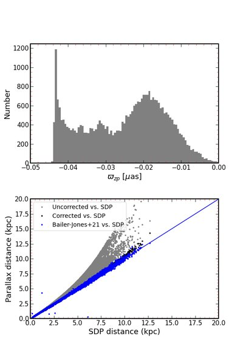 |
M. K. Mardini, A. Frebel, A. Chiti, Y. Meiron, K. Brauer, X. Ou
The Astrophysical Journal, 2022 · arXiv:2206.08459
|
2021
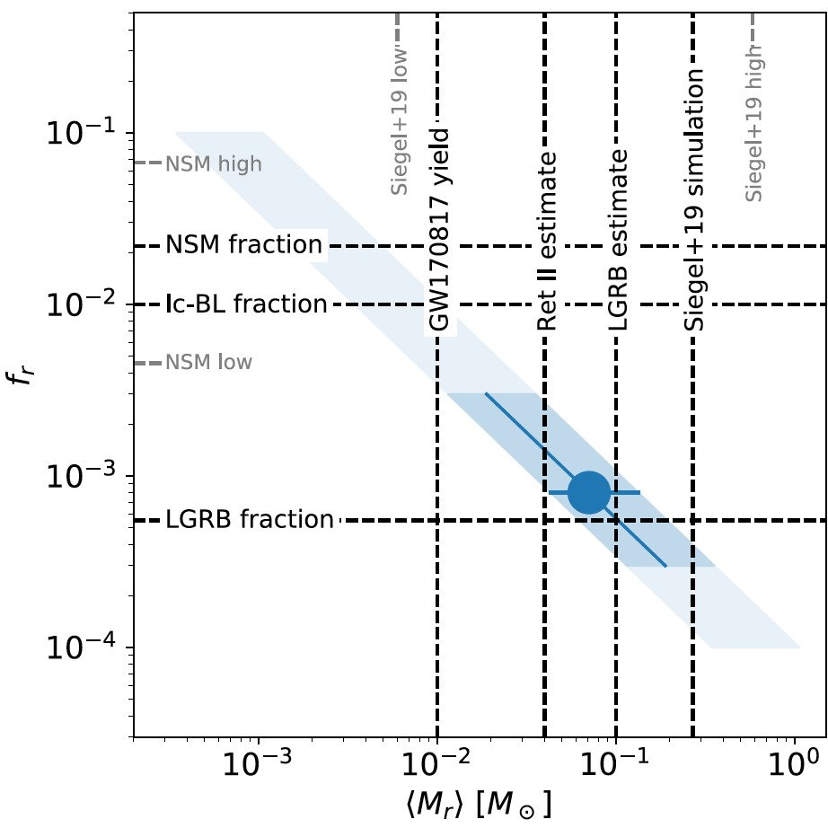 |
K. Brauer, A. P. Ji, M. R. Drout, A. Frebel
The Astrophysical Journal, 2021 · arXiv:2010.15837
|
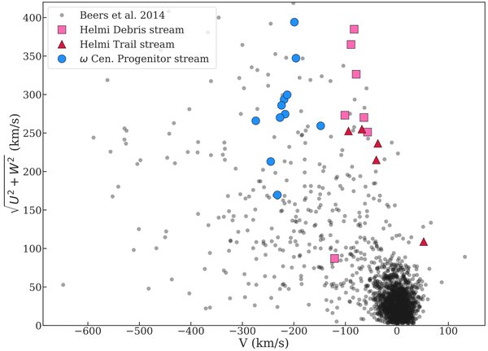 |
M. Gull, A. Frebel, K. Hinojosa, I. U. Roederer, A. P. Ji, K. Brauer
The Astrophysical Journal, 2021 · arXiv:2102.00066
|
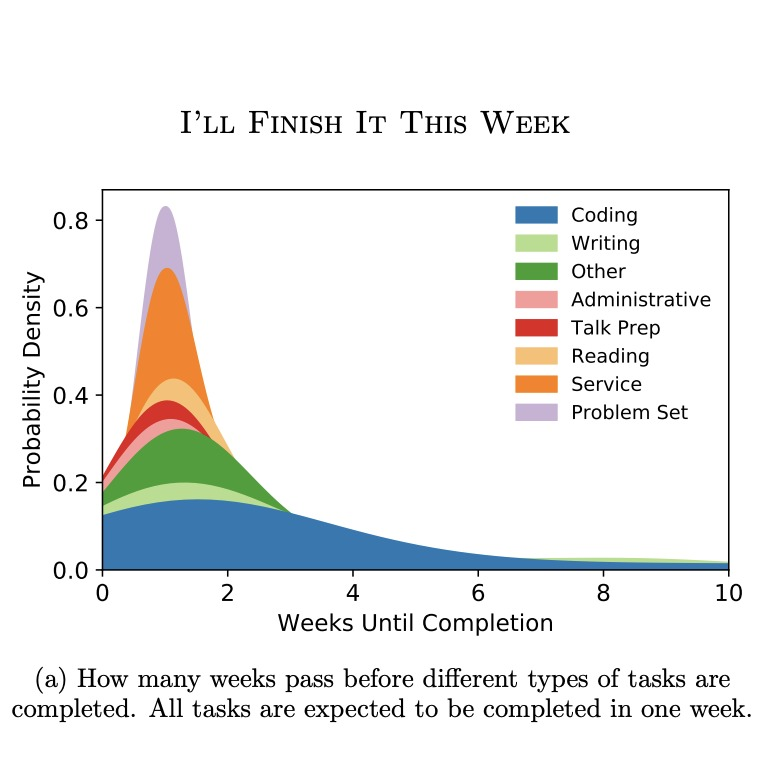 |
K. Brauer
arXiv preprint, 2021 · arXiv:2103.16574
|
2019
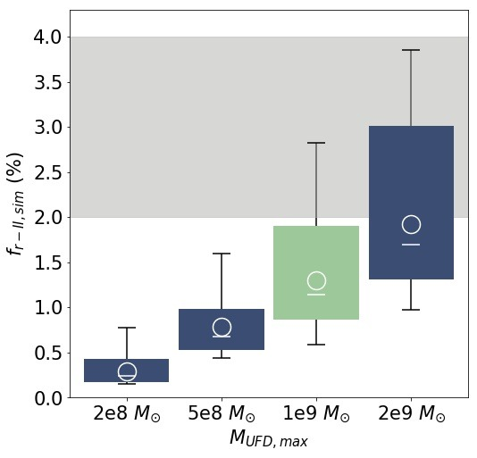 |
K. Brauer, A. P. Ji, A. Frebel, G. A. Dooley, F. A. Gómez, B. W. O'Shea
The Astrophysical Journal, 2019 · arXiv:1809.05539
|
2018
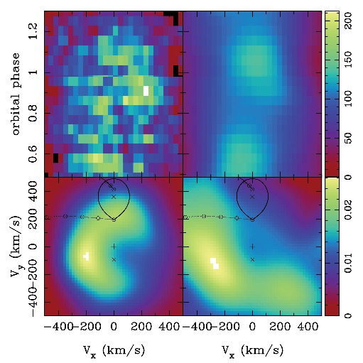 |
K. Brauer, S. D. Vrtilek, C. Peris, M. McCollough
Monthly Notices of the Royal Astronomical Society, 2018 · arXiv:1711.00947
|